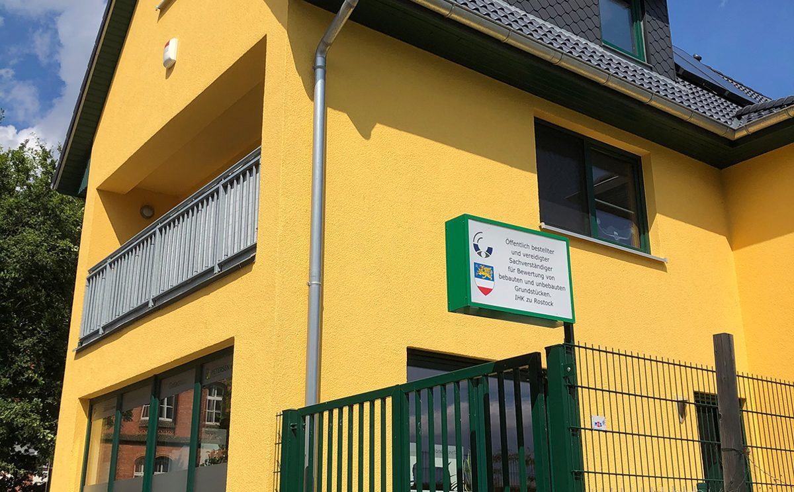

Verkehrswert- und Beleihungswertgutachten für alle Immobilienarten und Bewertungsanlässe. Unabhängig, fundiert und anerkannt bei Gerichten, Banken und Finanzämtern.
Kontakt aufnehmen Unsere LeistungenGutachten und Bewertungen für private und institutionelle Auftraggeber – transparent, nachvollziehbar und nach anerkannten Standards.
Für unbebaute und bebaute Grundstücke nach § 194 BauGB – für alle Immobilienarten und Bewertungsanlässe.
Nach § 16 PfandBG für alle Immobilienarten – die verlässliche Grundlage für Ihre Finanzierung.
Bewertung von Geh-, Fahr- und Leitungsrechten, Erbbaurechten und weiteren Rechten und Belastungen.
Gutachtenerstellung unter Nutzung der Software: LORA 3.0 (on-geo), ProSa und ProBel (Sprengnetter)


Öffentlich bestellter und vereidigter Sachverständiger für die Bewertung von bebauten und unbebauten Grundstücken (IHK Rostock), zertifizierter Immobiliengutachter CIS HypZert F, ZIS Sprengnetter Zert (AI) und Professional Member der RICS.